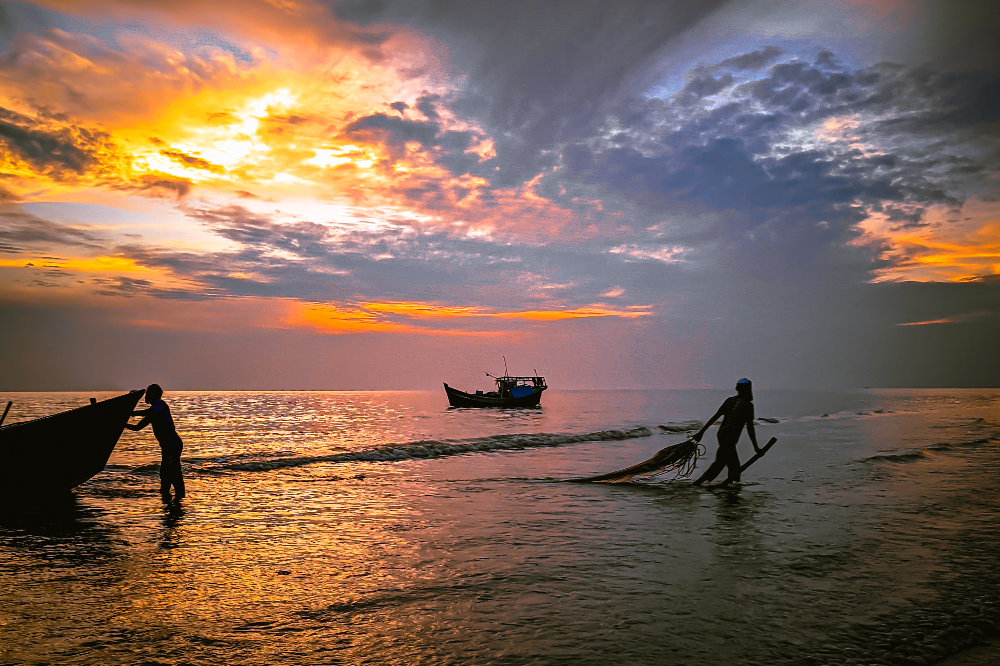
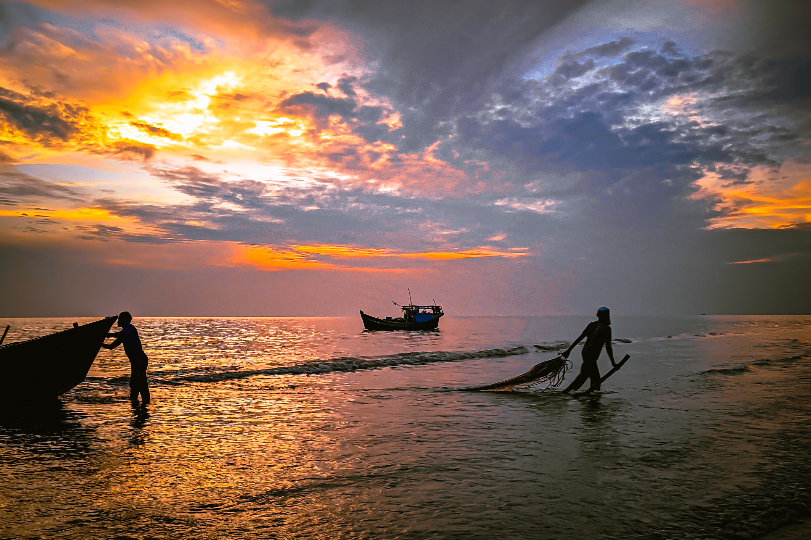
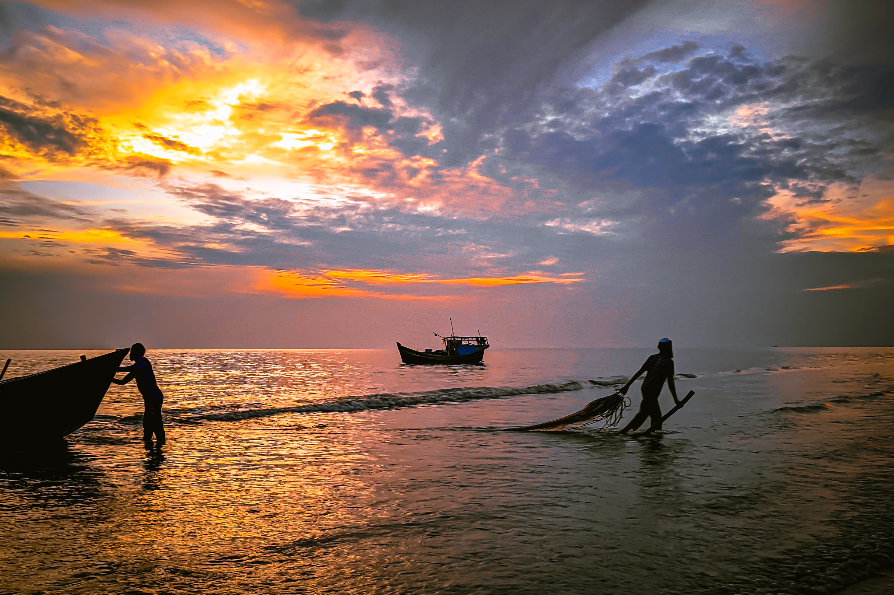

Originally from Dhakaiya, Fahim has been on rivers his whole life, runs the river year round and his favorite run in our winter is the amazing Futaleufu during the Austral summer. He is a man who lives life according to his “river time” ethos, which means he never stops, just as a river never stops flowing… He mends, fixes and restores whatever he can. Out on the river, he is talented, at one with the river and makes you see his lines, sometimes they are the harder ones. But he will get you the most your bang for your buck, guaranteed! At the camp-fire he will entertain you with tales, adventures past and songs while strumming his guitar or banjo! He is also the only person we know who has taken a paddle board from ‘Bridge to Bridge’ section on the Fu!!!
CATCH ME ON FACEBOOK
